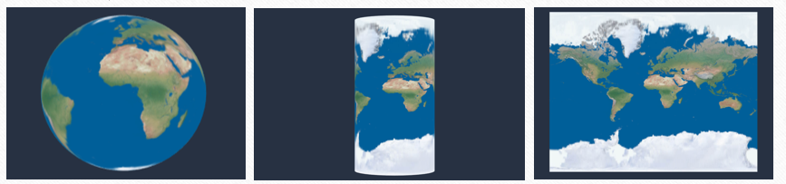
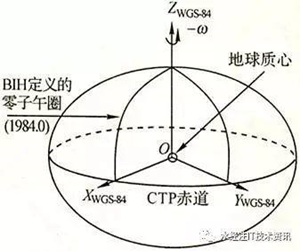
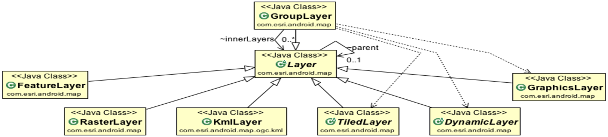
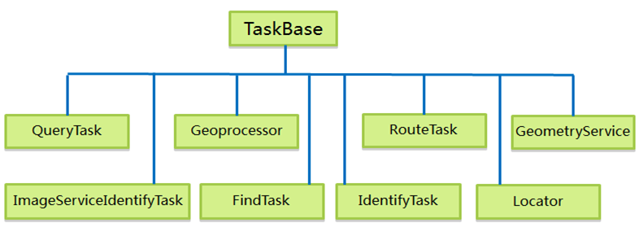

title: Android Gis开发经验分享
tags: 移动
categories: mobile
Android Gis开发经验分享
概述
一、地图坐标系的认识
二、地图管理类的认识
三、Gis开发熟知
四、Gis开发平台差异化注意事项
一、地图坐标系的认识
1. WGS84坐标系
一种国际上采用的地心坐标系.
2. WGS84 Web墨卡托
Web墨卡托是2005年谷歌在谷歌地图中首次使用的,如今主流的Web地图几乎都是使用的Web墨卡托,如：国内的百度地图、高德地图、腾讯地图和天地图等也是基于Web墨卡托（国内地图有加密要求，有两种情况，一种是在 Web墨卡托的基础上经过国家标准加密的国标02坐标系，熟称“火星坐标系”；另一种是在国标的02坐标系下进一步进行加密，如百度地图的BD09坐标系）。

3.GCJ02经纬度投影
GCJ-02是由中国国家测绘局（G表示Guojia国家，C表示Cehui测绘，J表示Ju局）制订的地理信息系统的坐标系统。它其实就是对真实坐标系统进行人为的加偏处理，按照特殊的算法，将真实的坐标加密成虚假的坐标，而这个加偏并不是线性的加偏，所以各地的偏移情况都会有所不同。而加密后的坐标也常被大家称为“火星坐标系统”。
该坐标系的坐标值为经纬度格式，单位为度； GCJ02经纬度投影，就是在WGS84经纬度的基础之上，进行GCJ-02加偏；BD09经纬度投影属于百度坐标系，它是在标准经纬度的基础上进行GCJ-02加偏之后，再加上百度自身的加偏算法，也就是在标准经纬度的基础之上进行了两次加偏。
4.GCJ02 Web 墨卡托投影
该坐标系的坐标值为Web墨卡托格式，单位为米；这里的GCJ02 Web 墨卡托，也就是在标准Web默卡托的基础之上，进行GCJ-02加偏。
5. 北京54坐标系
我国与前苏联1942年坐标系进行联测，通过计算建立了我国大地坐标系，定名为1954年北京坐标系。
它的原点不在北京而是在前苏联的普尔科沃；该坐标系存在很多缺点，为此，我国在1978年在西安召开了”全国天文大地网整体平差会议”，提出了建立属于我国自己的大地坐标系，即后来的1980西安坐标系。
6. 西安80坐标系
该坐标系的大地原点设在我国中部的陕西省泾阳县永乐镇，位于西安市西北方向约60公里。
7. CGCS2000坐标系
2000中国大地坐标系(China Geodetic Coordinate System 2000，CGCS2000)，又称之为2000国家大地坐标系，是中国新一代大地坐标系，21世纪初已在中国正式实施。
8. OGC标准
OGC 全称是开放地理空间信息联盟(Open Geospatial Consortium),是一个非盈利的国际标准组织，
它制定了数据和服务的一系列标准，GIS厂商按照这个标准进行开发可保证空间数据的互操作
9.EPSP代码
EPSP的英文全称是European Petroleum Survey Group，中文名称为欧洲石油调查组织。这个组织成立于1986年，2005年并入IOGP(InternationalAssociation of Oil & Gas Producers)，中文名称为国际油气生产者协会；EPSG对世界的每一个地方都制定了地图，但是由于座标系不同，所以地图也各不相同。
10.SRID：
OGC标准中的参数SRID，也是指的空间参考系统的ID，与EPSG一致；天地图通常采用的4490坐标系其实也就是CGCS2000坐标系 。

二、地图管理类的认识
1. ArcGISDynamicMapServiceLayer
extends DynamicLayer
2. ArcGISTiledMapServiceLayer
extends TiledServiceLayer
3. ArcGISLocalTiledLayer
extends TiledLayer
4. ArcGISFeatureLayer
extends GraphicsLayer
5. TianDiTuLayer
extends TiledServiceLayer
6. GraphicsLayer
extends Layer
7. WMSLayer
extends DynamicLayer
8. 其他：
WMSLayer、WFS、 WMTSLayer、 WebMapLayer、 WCS、WPS、WCPS等…
其中wms是web地图服务，是一个仓库管理系统；wfs 是web要素服务，是一个工作流系统；

三、Gis开发常用函数
1.FindTask
多个图层的要素查询、不能进行“空间查询”；
2. QueryTask
空间和属性查询
3. IdentifyTask
多个图层中查询、识别要素（Feature）；
4. OnSingleTapListener
地图点击事件监听
5. calculateLength2D()
线长度计算
6. polygon.calculateArea2D()
面积计算
7. GeometryEngine
图形交叉关系识别及计算

四、Gis平台差异化注意事项（android为主）
1.ArcGISDynamicMapServiceLayer 无法显示问题属性设置：Supports Dynamic Layers: true
2.ArcGISDynamicMapServiceLayer可根据底图坐标系自行调整。
如：加载wmts地图服务后进行ArcGISDynamicMapServiceLayer叠加可进行图层显示、反之无法显示。
3.ArcGISDynamicMapServiceLayer(String url) 与
ArcGISDynamicMapServiceLayer(String url, int[] visiblelayers)差异
初始化传入visiblelayers，后面可通过图层id进行单个图层的控制、否则无法正常控制。
4.ArcGISDynamicMapServiceLayer(String url, int[] visiblelayers)部分地图服务必须使用此函数才可正常显示图层。
项目经历：广州项目添加特有的配置文件支持该函数的使用。
问题讨论：
1.三大查询的异步处理机制？
2.地图服务操作常见问题总结。
3.天地图加载方式及注意事项。